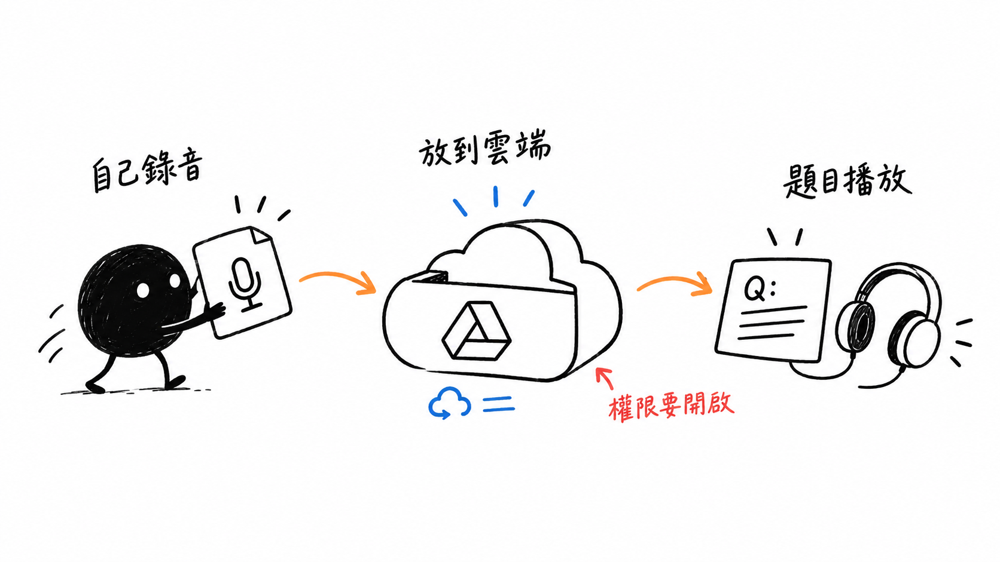
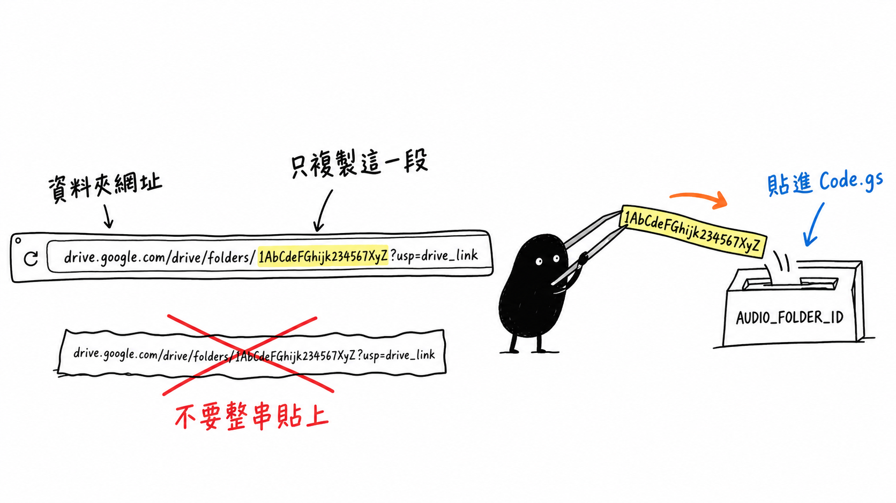

進階第三課 / AUDIO QUIZ
族語聽力測驗
用 Google Sheet 管理族語、中文、例句與級別，再用 Google Drive 音檔資料夾自動配對聲音，完成學生可直接作答的聽力測驗。
這是已部署的 /exec 示範網址，可以開啟成品並測試學生的實際作答流程。

先找到音檔櫃子的地址
Google Drive 資料夾 ID 怎麼找？

- 打開 Google Drive，按左上角「＋新增」→「新增資料夾」，例如命名為「測驗音檔」。
- 雙擊進入這個資料夾。一定要先進入資料夾裡，網址才會出現它的 ID。
- 看瀏覽器最上方的網址列，網址會像下面這樣。
https://drive.google.com/drive/folders/1AbCdeFGhijk234567XyZ?usp=drive_link
不要複製前面的網址與後面的
?usp=drive_link→
只複製黃色這一段
folders/ 後面、問號 ? 前面- 回到 Apps Script，開啟 Code.gs。
- 找到
const AUDIO_FOLDER_ID，把引號裡的提示文字換成剛剛複製的 ID。
const AUDIO_FOLDER_ID = '1AbCdeFGhijk234567XyZ';
製作順序
- 用手機或電腦錄音，輸出 MP3、M4A 或 WAV。
- 把音檔放進同一個 Google Drive 資料夾；檔名要和試算表的「中文」一致，例如
你好.mp3，也可寫成001_你好.mp3。 - 開啟音檔資料夾，從網址
folders/後面複製資料夾 ID。 - 在 Code.gs 的
AUDIO_FOLDER_ID貼上資料夾 ID。 - Google Sheet 建立「題庫」工作表，依序填入族語、中文、例句、級別；音檔連結先留白。
- 在 Apps Script 上方選擇
autoFillAudioLinks並按執行；第一次會要求雲端硬碟權限。 - 程式會比對音檔名稱，自動把連結填入 E 欄。
- 新增 HTML 檔案並命名為 quiz，貼上下方第二段程式，最後部署為網頁應用程式。
資料夾 ID 是程式找到音檔櫃子的地址。 ID 錯誤、資料夾被刪除或目前帳號沒有權限，所有音檔都無法自動配對。
老師不必逐筆複製音檔連結。 只要檔名和「中文」欄一致，再執行 autoFillAudioLinks，E 欄就會自動完成。
題庫只需要五欄
| 欄 | 名稱 | 老師要填什麼 |
|---|---|---|
| A | 族語 | 答題後顯示的族語答案 |
| B | 中文 | 正確答案，也要對應音檔檔名 |
| C | 例句 | 答題後補充，可留白 |
| D | 級別 | 分類資訊，可留白 |
| E | 音檔連結 | 不用手填，由程式自動填入 |
Code.gs
讀取中…正在讀取程式碼…
quiz.html
讀取中…正在讀取程式碼…